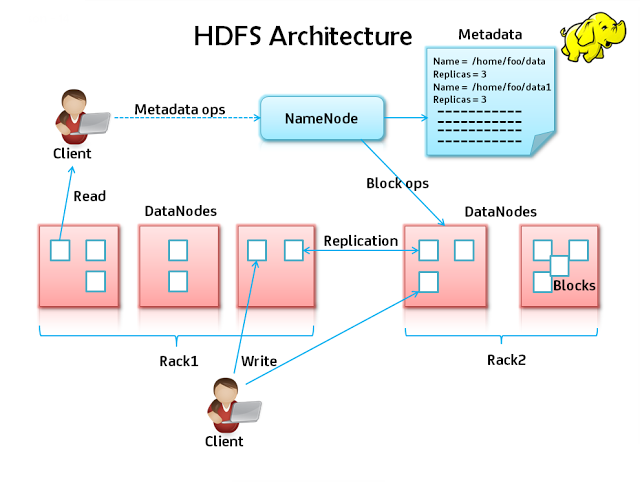

HDFS
In order to use HADOOP, it is crucial that you understand the basic functioning of HDFS, as well as some of its constraints. After a brief introduction of core HDFS concepts, this page presents copy-paste-like tutorial to familiarize with HDFS commands. It mainly focuses on user commands (uploading and downloading data into HDFS).
Resources
While the source of truth for HDFS commands is the code source, the documentation page describing the hdfs dfs commands is really useful.
A good and simpler cheat sheet is also available here.
Introduction
HDFS (Hadoop Distributed File System) is one of the core components of HADOOP.
The HDFS is a distributed file system designed to run on commodity hardware. Very powerful, it should ensure that data are replicated across a wide variety of nodes, making the system fault tolerant and suitable for large data sets and gives high throughput.
Tip
To have a better understanding of how HDFS works, we strongly encourage you to check out the HDFS Architecture Guide.
Some remarks on HDFS
HDFS uses a simple coherency model: applications mostly need a write-once-read-many access model for files. As a result, a file once created, written to and closed becomes read-only. It is possible to append to an HDFS file only if the system was explicitly configured to.
HDFS is tuned to deal with large files. A typical file in HDFS is gigabytes to terabytes in size. As a result, try to avoid scattering your data in numerous small files.
HDFS is designed more for batch processing rather than interactive use (high throughput versus low latency), and provides only sequential access of data. If your application has other needs, check out tools like HBase, Hive, Apache Spark, etc.
“Moving Computation is Cheaper than Moving Data”
HDFS architecture
As the the HDFS Architecture Guide explains, HDFS has a master/slave architecture.
An HDFS cluster consists of a single NameNode, a master server that manages the file system namespace and regulates access to files by clients. In addition, there are a number of DataNodes, usually one per node in the cluster, which manage storage attached to the nodes that they run on. HDFS exposes a file system namespace and allows user data to be stored in files. Internally, a file is split into one or more blocks and these blocks are stored in a set of DataNodes. The NameNode executes file system namespace operations like opening, closing, and renaming files and directories. It also determines the mapping of blocks to DataNodes. The DataNodes are responsible for serving read and write requests from the file system’s clients. The DataNodes also perform block creation, deletion, and replication upon instruction from the NameNode.

Basic Manipulations
To interact with HDFS you should use the dfs module. The dfs module, also known as "FS shell", provides basic file manipulation operations.
Info
In HDFS, user's folders are stored in /user and not /home like traditional Unix/Linux filesystems.
Listing your home folder
$ hdfs dfs -ls /user/<your_user> Found 28 items ... -rw-r--r-- 3 llinder daplab_users 6398990 2015-03-13 11:01 data.csv ... ^^^^^^^^^^ ^ ^^^^^^^^ ^^^^^^^^^^^^ ^^^^^^^ ^^^^^^^^^^ ^^^^^ ^^^^^^^^ 1 2 3 4 5 6 7 8
Info
Relative paths points to your home folder, using : hdfs dfs -ls /user/<your_user> is the same as hdfs dfs -ls
Columns, as numbered below, represent:
- Permissions, in traditional unix permission syntax;
- Replication factor, RF in short. The RF default to 3 for a file and 0 for a directory;
- Owner (you!);
- Group owning the file;
- Size of the file, in bytes. Note that to compute the physical space used, this number should be multiplied by the RF;
- Modification date. As HDFS being mostly a ''write-once-read-many'' filesystem, this date often means creation date;
- Modification time. Same as date;
- Filename, within the listed folder.
Uploading a resource
To put a file to HDFS, you have two choices. You can use hdfs with the -put option or with the -copyFromLocal option:
# uploading a file hdfs dfs -put localfile.txt /user/<your_user> hdfs dfs -copyFromLocal localfile.txt /user/<your_user> # uploading a directory hdfs dfs -put localdir /user/<your_user> hdfs dfs -copyFromLocal localdir /user/<your_user>
The first arguments after -copyFromLocal or -put point to local files or folders, while the last argument is a file (if only one file listed as source) or directory in HDFS. Note that you can rename files and folders when copying, exactly as you would do in a linux shell:
# uploading all files in the current directory with the .txt extension hdfs dfs -put *.txt /user/<your_user> hdfs dfs -copyFromLocal *.txt /user/<your_user> # uploading a directory and renaming it hdfsdir hdfs dfs -put localdir /user/<your_user>/hdfsdir hdfs dfs -copyFromLocal localdir /user/<your_user>/hdfsdir
Uploading data for next sessions:
- Now lets upload the data that we will use for MapReduce and Hive:
1) Bible Shakespear Data:
- Download bible_shakespear data set
- Decompress and upload to HDFS:
hdfs dfs -put bible_shakes.nopunc /user/<your_user>
- Download the csv file Batting.csv
- Upload to HDFS:
hdfs dfs -put Batting.csv /user/<your_user>
Downloading a resource
Download is the same as uploading, but -put becomes -get and -copyFromLocal becomes -copyToLocal:
hdfs dfs -get /user/<your_user>/remotefile.txt . hdfs dfs -copyToLocal /user/<your_user>/remotefile.txt .
Creating a folder
To create a folder, use -mkdir
# create a folder in your hdfs home
hdfs dfs -mkdir dummy-folder
Removing resources
To remove individual files, use the -rm option:
hdfs dfs -rm /user/<your_user>/somefile.txt
To remove a folder, the option is -rmdir for an empty directory and -rm -r for a non-empty one. The -r in -rm -r means recursive: it removes the folder and all its children recursively:
# remove the dummy-folder in your home hdfs dfs -rmdir dummy-folder rmdir: '/tmp/lala': Directory is not empty # oups, the directory is not empty... use -rm -r hdfs dfs -rm -r dummy-folder
Advanced Manipulations
the hdfs dfs command support several actions that any linux user is already familiar with. Most of their parameters are the same, but note that the collapsing of options (-rf instead of -r -f for example) are not supported. Here is a non-exhaustive list:
-rm [-r] [-f]: remove a file or directory;-cp [-r]: copy a file or directory;-mv: move/rename a file or directory;-cat: display the content of a file;-chmod: manipulate file permissions;-chown: manipulate file ownership;-tail|-touch|etc.
Other useful commands include:
-moveFromLocal|-moveToLocal: same as-copyFromLocal|-copyToLocal, but remove the source;-stat: display information about the specified path;-count: counts the number of directories, files, and bytes under the paths;-du: display the size of the specified file, or the sizes of files and directories that are contained in the specified directory;-dus: display a summary of the file sizes;-getmerge: concatenate the files in src and writes the result to the specified local destination file. To add a newline character at the end of each file, specify theaddnloption:hdfs dfs -getmerge <src> <localdst> [addnl]-setrep [-R]: change the replication factor for a specified file or directory;